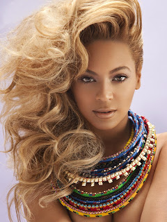

BIOGRAPHY

Who is Beyoncé Giselle Knowles?
Beyoncé Knowles first captured the public's eye as lead vocalist of the R&B group Destiny's Child.
She later established a solo career with her debut album Dangerously in Love, becoming one of music's top-selling artists with sold-out tours and a slew of awards. She also holds the record for most Grammy wins ever by a female artist with 28.
Knowles has also starred in several films, including Dream Girls.
She married hip-hop recording artist Jay-Z in 2008 and the couple has three children.
Early Life
Beyoncé Giselle Knowles was born on September 4, 1981, in Houston, Texas. She started singing at an early age, competing in local talent shows and winning many of these events by impressing audiences with her singing and dancing abilities.
Destiny's Child
Teaming up with her cousin Kelly Rowland and two classmates, Knowles formed an all-female singing group. Her father, Matthew Knowles, served as the band's manager. The group went through some name and line-up changes before landing a record deal in 1997 with Columbia Records. Destiny's Child soon became one of the most popular R&B acts, with the release of their first, self-titled album. Gaining momentum, the group scored its first No. 1 single on the pop charts with "Bills, Bills, Bills," off their second album. The recording also featured another smash hit, "Say My Name."
While enjoying her group's success, Knowles began exploring other projects. She made her acting debut in 2001 with a starring role in Carmen: A Hip Hopera. She then co-starred with Mike Myers in the Austin Powers spy parody Goldmember the following year.
Solo Career
On the musical front, Knowles took center stage as a solo artist, releasing her first album, Dangerously in Love, in 2003. The recording became a huge success for her both commercially and critically. It sold millions of copies and won five Grammy Awards. On the album, Knowles worked with a number of different artists, including Missy Elliott, Sean Paul and Jay-Z. She was rumored to be dating Jay-Z around this time, but the couple did not publicly acknowledge their relationship.
Destiny's Child released their last studio album, Destiny Fulfilled, in 2004, and officially broke up the following year.
On her own, Knowles continued to enjoy great success. Her second studio album, 2006's B'Day featured such hits as "Irreplaceable" and "Deja Vu." On the big screen, she starred opposite Jennifer Hudson, Jaime Foxx and Eddie Murphy in Dreamgirls. The film was adapted from the hit Broadway musical of the same name
Marriage to Jay-Z
In 2008, Knowles married rapper and music mogul Jay-Z in a small, private ceremony in New York City. Among the guests sighted at the wedding were Knowles' mother, Tina Knowles; father, Matthew; sister, Solange; Destiny's Child members Rowland and Michelle Williams; and friend Gwyneth Paltrow.
The newlywed continued to work as hard as ever, promoting her latest effort, I am... Sasha Fierce (2008). Knowles scored two big hits off the album — "Single Ladies (Put a Ring on It)" and "If I Were a Boy." She also returned to the big screen that year, starring as R&B legend Etta James in Cadillac Records. The following January, Knowles sang James' trademark song, "At Last," for President Barack Obama and first lady Michelle Obama at his inaugural ball.